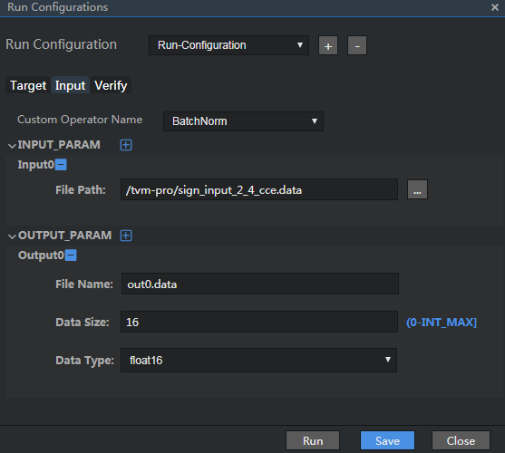
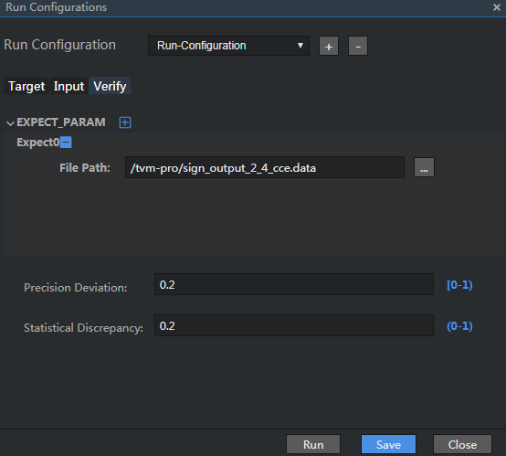

Project Compilation
A TE operator is automatically compiled when the project is running. The following uses the sign operator in the sample project as an example.
Select the sample project and choose Run > Edit Run Configuration... from the menu bar. The Run Configurations dialog box is displayed, as shown in Figure 1.
Configure the of TE parameters.
The TE run configurations consist of three tab pages.
Table 1 Description of TE configuration parameters
Specifies the information of the run target.
- For an ASIC project, enter the IP address of the host.
- For an Atlas DK project, enter the IP address of the developer board.
Describes the input and output data of the operator.
- Custom Operator Name:
name of a single operator. After a project is created, the name is automatically displayed.
- INPUT_PARAM: description of the input data. You can add a maximum of 20 data records.
File Path: input data file. Select the binary input data file built in Sample Data GeneratIon.
- OUTPUT_PARAM: description of the output data. You can add a maximum of 10 records.
Provides parameters for checking whether the output of the running parameter configuration in the Run Configurations dialog box is consistent with the expected result. Parameters on this tab page are optional. If they are not set, the system does not check the correctness of output data during running.
Figure 3 shows the configuration example. The configuration items are described as follows:
- EXPECT_PARAM: expected result of the user, which is used to check the output result. The number of data records must be the same as the number of output data records. A maximum of 10 data records can be entered.
Expect0: first verification data
File Path: data verification file. You are not allowed to manually edit the file path.
- Precision Deviation: allowed precision deviation. The value range is [0, 1). The default value is 0.2. A smaller value indicates higher precision.
- Statistical Discrepancy: percentage of data whose precision deviation does not meet the threshold in the entire data set. The value range is (0, 1). The default value is 0.2. A smaller value indicates higher precision.
Figure 2 Configuration example of the Input tab page
Figure 3 Configuration example of the Verify tab page
 NOTE:
NOTE:
Tensor Engine performs data verification only after the following requirements are met: (1) The number of parameters in the EXPECT_PARAM area are the same as that in the OUTPUT_PARAM area in the Run Configurations dialog box. (2) No configuration option on the Verify tab page is left blank.After the configuration is complete, click Save.